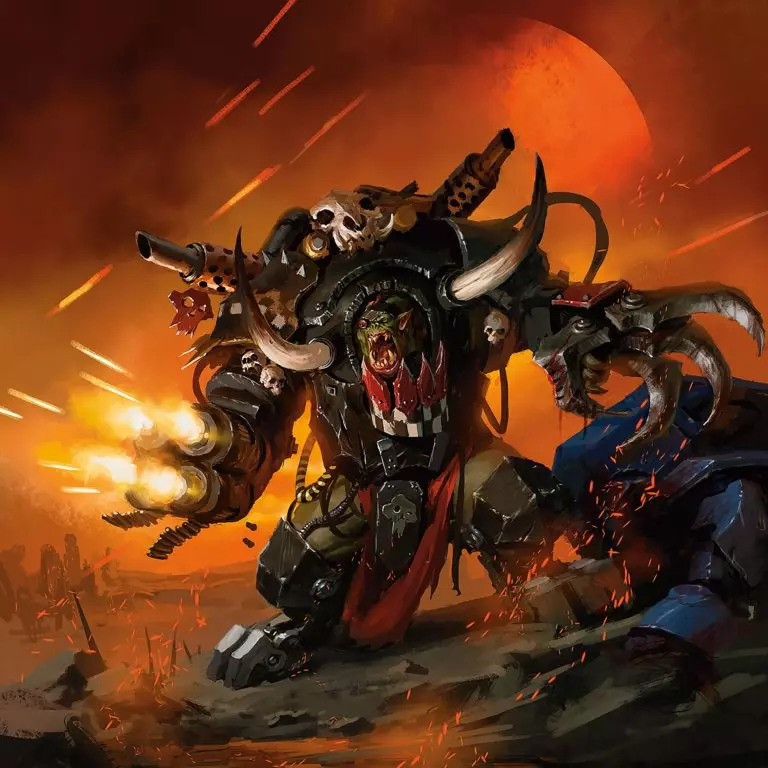
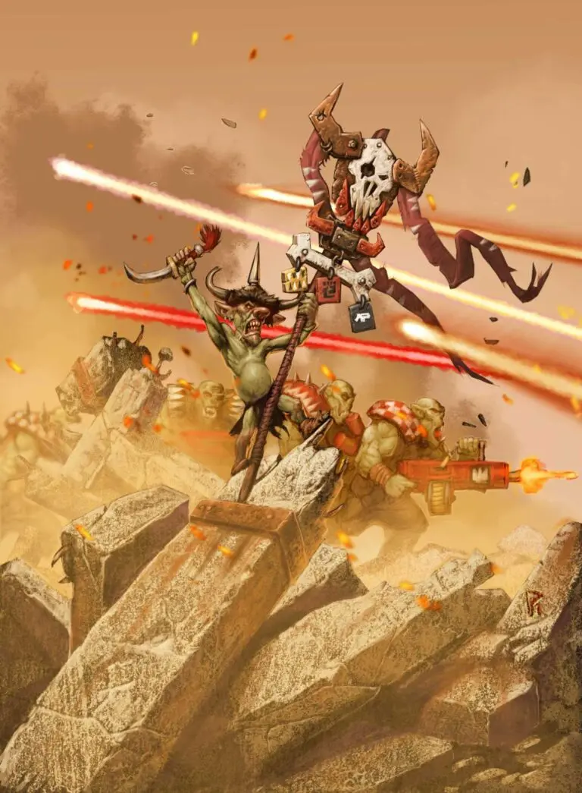
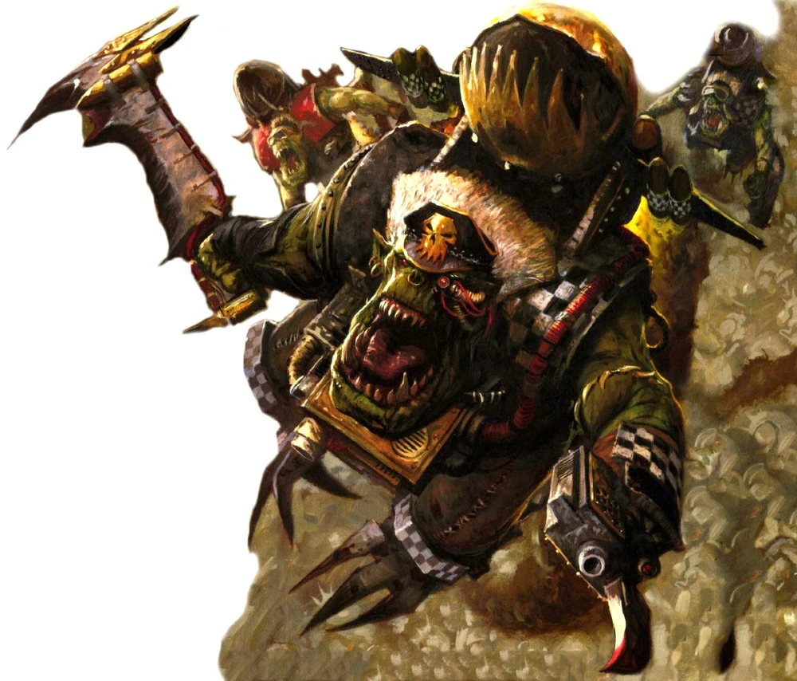
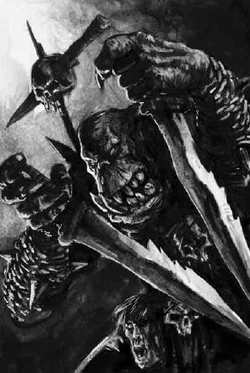
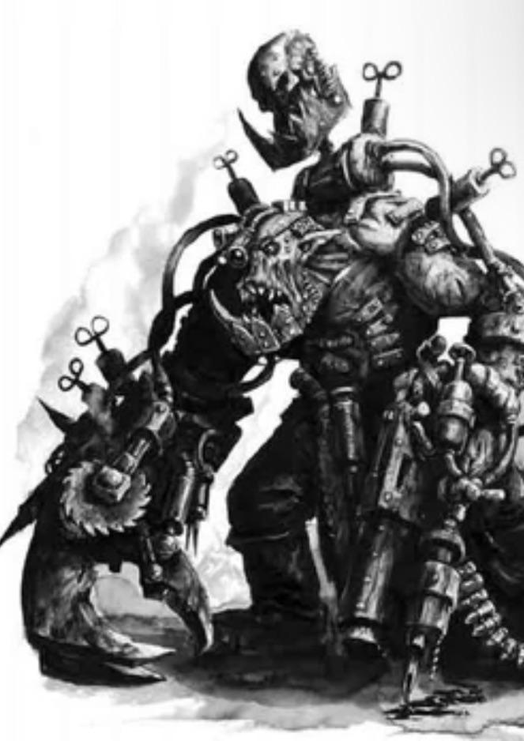
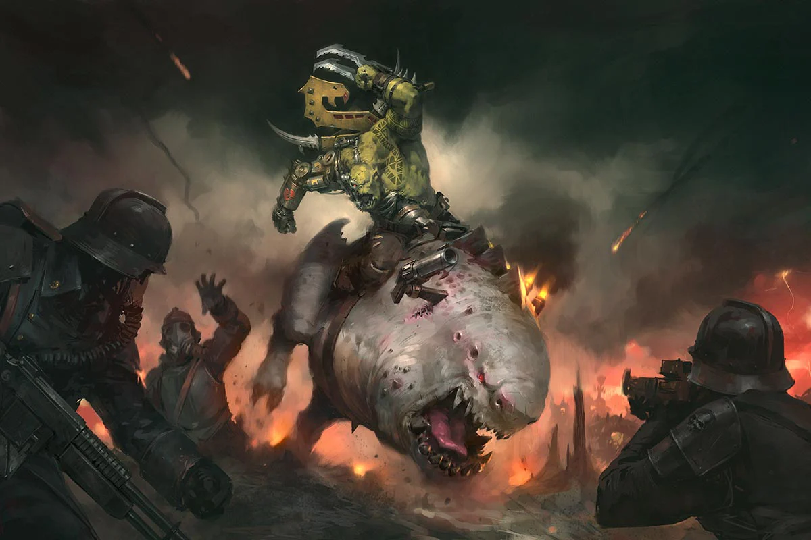
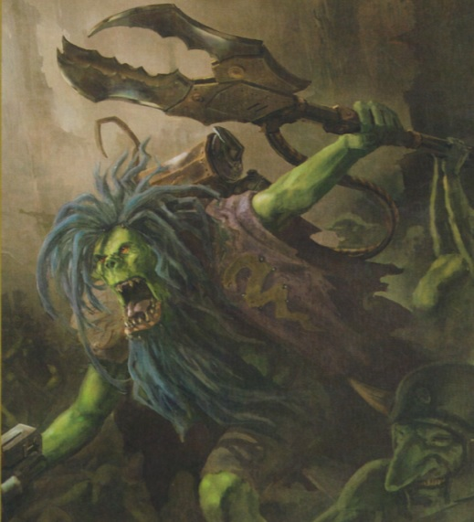
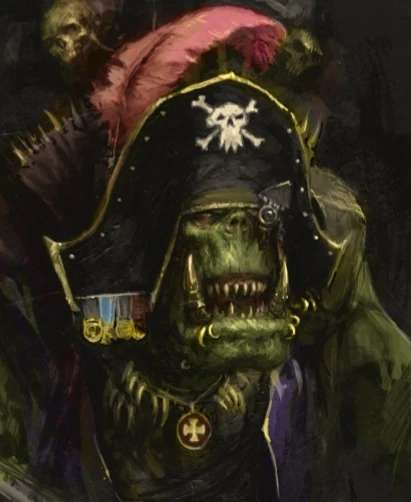

Notable Boyz
The Orks, as you can no doubt see, are one of the silliest factions in the galaxy. They boast some of the weirdest and zaniest characters in the setting. This section will highlight some of the wacky and terrifying ork characters.
Ghazghkull Mag Uruk thraka
Ghazghkull Mag Uruk Thraka is a legendary Ork Warboss and the leader of the largest Waaagh! the galaxy has ever seen. Once a minor Ork, he rose to power after claiming to be the prophet of Gork and Mork, the Ork gods, who supposedly spoke to him during a near-death experience. Uniting the Ork tribes under his banner, Ghazghkull led a devastating campaign across the galaxy, most notably against the Imperium's forces on Armageddon. After suffering defeat and being grievously wounded, he was resurrected by the Waaagh! energy, becoming a more powerful and cyborg-like figure. Ghazghkull is now a symbol of Ork might and cunning, a constant threat to the Imperium and all other factions in the galaxy.
Makari
Makari is the ever-“lucky” Grot standard-bearer of Ghazghkull Mag Uruk Thraka, famous among the Orks for surviving battles and disasters that should have flattened him ten times over. Clad in oversized regalia and proudly hauling Ghazghkull's massive banner, Makari has become a living icon of his Warboss’s Waaagh!, inspiring the Boyz as much through superstition as through his squeaky bravado. Though tiny and fragile compared to the monsters he marches beside, his uncanny streak of survival has convinced many Orks that he’s blessed by Gork (or possibly Mork), making him almost as legendary as Ghazghkull himself. Once thought dead—squashed by Thraka in a temper—Makari has improbably returned, proving that not even being stomped flat can stop the luckiest grot in the galaxy.
Boss Zagstruk
Boss Zagstruk is a fearsome and iconic Ork, known as the leader of an elite group of Stormboyz called “the Vulcha Squad,” an elite group of Ork infantry that specializes in high-speed aerial assaults. Zagstruk is a merciless killer and a fanatical disciplinarian; he despises weakness and loves bullying those smaller than him into doing exactly what they are told. His mood swings between foul temper and murderous fury at the slightest provocation. Nevertheless, his reckless aggression and relentless drive to destroy are the hallmark of the Ork mindset, and he is revered as a living legend among his tribe, inspiring fear and admiration in equal measure.
Boss Snikrot
Boss Snikrot is the infamous Kommando leader of the Orks, feared across the galaxy for his mastery of stealth—a rare and unsettling trait among his kind. Leader of "Da Red Skull Kommandos," he leads his elite unit in terrifying ambushes and night raids, striking from the shadows with brutal precision. Snikrot's reputation is built on his uncanny ability to appear where the enemy least expects, whether deep behind enemy lines or slipping through defenses thought impenetrable. Wielding a pair of vicious blades and employing tactics more akin to a greenskin ghost story than the usual Orky charge, he spreads fear and confusion before vanishing back into the dark. To Imperial Guardsmen and even hardened Astartes, whispers of Snikrot often carry the same weight as a death sentence.
Mad Dok GrotSnik
Mad Dok Grotsnik is the most infamous Painboy in Ork history, a deranged but brilliant surgeon whose crude medical experiments blur the line between genius and madness. Once the personal sawbones of the great Warboss Ghazghkull Mag Uruk Thraka, Grotsnik is obsessed with “fixin'” Orks through brutal surgeries, grafts, and bionik enhancements, often regardless of whether his patients want them or survive the process. His obsession stems from a lingering head injury and half-mad compulsion, driving him to operate endlessly in pursuit of creating the “perfect Ork.” On the battlefield, he charges headlong with his mob of Cyborks, wielding his massive “Uge Choppa” and surgical tools to terrifying effect. Equal parts healer, butcher, and lunatic, Mad Dok Grotsnik embodies the Orks' brutal ingenuity, leaving a trail of mangled patients and enemies alike wherever he goes.
Mozrog Skragbad
Mozrog Skragbad is a legendary Beastboss of the Snakebites clan, famed as the greatest squigosaur rider in Orkdom and the self-proclaimed “Da Beastbreaker.” A towering brute even by Ork standards, he is utterly fearless and monstrously strong, having once slain an enormous sea-beast with his bare hands before breaking and taming his monstrous squigosaur, Big Chompa. Mozrog embodies the Snakebites' primal savagery, shunning technology in favor of raw strength, beast-taming, and brutal cunning. On the battlefield, he leads the charge astride Big Chompa, tearing through tanks, monsters, and infantry alike with a mix of his own brutal klaw and his mount's colossal jaws. To Orks, he is living proof of the Snakebite way: that da strongest rule, da wildest beasts can be tamed, and nothing is more Orky than smashing enemies face-first in a storm of teeth and claws.
Zodgrod Wortdnagga
Zodgrod Wortsnagga is a notorious Runtherd of the Snakebites clan, infamous for his unorthodox belief that Gretchin aren't just expendable fodder but can be “edukated” into being useful on the battlefield. Scorned by most Orks as a weirdo and a git, Zodgrod nevertheless backs up his eccentric ideas with surprising success, drilling his “Runts” into shockingly effective forces that can outwit and overwhelm enemies far larger than themselves. Armed with his oversized “Runtherd's Grabba” and accompanied by mobs of surprisingly disciplined Gretchin, he has earned a reputation as both a laughingstock and a dangerous wildcard, depending on who you ask. While many Orks mock his methods, Zodgrod takes great pride in proving them wrong, unleashing tides of cunning little runts that fight with a ferocity no one expects—until it's far too late.
Kaptin BadRukk
Kaptin Badrukk is the infamous Freebooter Kaptin of the Da Blacktoof, renowned across the galaxy as the most successful and flamboyant Ork pirate of his age. Once a Flash Git with a love for excessive firepower and flashy loot, Badrukk took to the stars to amass wealth, plunder, and infamy, gathering a crew of Freebooterz loyal only to his charisma and his knack for victory. Armed with his custom snazzgun “Da Rippa” and clad in extravagant wargear dripping with trophies, he is both a fearsome fighter and a showman, blasting apart foes with overwhelming dakka while looking good doing it. Though other Orks sometimes call him a greedy git, they cannot deny that Badrukk's raids leave behind burning wrecks and mountains of loot, making him the ultimate example of an Ork who lives for the thrill of the fight and the spoils it brings.